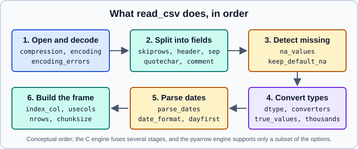

CSV & Text Files
|
This content was generated with the assistance of AI and should be verified against the official documentation before being relied on in production. |
Delimited text, above all CSV, is still the most common way data reaches a pandas program, and pandas.read_csv is the
most heavily used function in the library. It has more than forty parameters, and a surprising share of real-world
data-cleaning bugs (lost leading zeros, swapped day and month, a column of mixed types, a silent NaN from the string
"NA") are caused by accepting its defaults. This page explains what read_csv does step by step, how to control
each step, and how to write CSV back out without damaging data.
It targets pandas 3.1 on Python 3.13 or 3.14 and was checked in October 2026. Every example was run with Python 3.13,
pandas 3.1.0, NumPy 2.5.4 and PyArrow 26.0.0, and the printed output is the real output. Examples read from
io.StringIO so that they are self-contained; replace it with a path or a URL in your own code. Other formats are
covered in Excel,
JSON, HTML and XML,
Parquet, Feather, ORC and Iceberg and
SQL Databases; the general question of which format to choose is in
Data Acquisition and Formats.
A first read
import io
import numpy as np
import pandas as pd
csv = """id,name,signup,amount,active,zip
1,Ada,2024-01-05,"1,200.50",yes,01234
2,Grace,2024-03-17,980,no,00501
3,,2025-02-01,NA,yes,10001
"""
df = pd.read_csv(io.StringIO(csv))
print(df)
print(df.dtypes)Output:
id name signup amount active zip
0 1 Ada 2024-01-05 1,200.50 yes 1234
1 2 Grace 2024-03-17 980 no 501
2 3 NaN 2025-02-01 NaN yes 10001
id int64
name str
signup str
amount str
active str
zip int64
dtype: objectSource: pandas.read_csv.
Four defaults hurt here, and each is the reason for a parameter later on this page:
-
ziplost its leading zeros because it was inferred as an integer (01234became1234). -
signupstayed a string; pandas never guesses dates unless you ask (parse_dates). -
amountstayed a string because of the thousands separator"1,200.50", and becauseNAis a missing value. -
activestayed text becauseyesandnoare not recognised as booleans.
The same file read with explicit instructions:
df = pd.read_csv(
io.StringIO(csv),
index_col="id",
dtype={"zip": "str"},
parse_dates=["signup"],
thousands=",",
true_values=["yes"],
false_values=["no"],
)
print(df)
print(df.dtypes)Output:
name signup amount active zip
id
1 Ada 2024-01-05 1200.5 True 01234
2 Grace 2024-03-17 980.0 False 00501
3 NaN 2025-02-01 NaN True 10001
name str
signup datetime64[us]
amount float64
active bool
zip str
dtype: objectSource: pandas.read_csv.
What read_csv does

Reading the figure from the top left: the bytes are opened (decompressing if needed) and decoded with encoding; the
text is split into fields using the delimiter, quote and comment characters, after skipping initial rows and choosing
the header; each field is checked against the set of missing-value strings; the remaining text is converted to the
requested or inferred dtype; date columns are parsed; and finally columns are selected, an index is set and the row
count is limited. The order matters in practice: missing-value detection happens before type conversion, so a
column declared int64 that contains a missing value (NA, an empty field) raises ValueError: Integer column has
NA values. Without a declared dtype pandas makes the column float64; use a nullable dtype such as Int64 to keep
integers.
Where the data comes from
The first argument can be a path, a URL (http://, https://, s3://, gs:// and other fsspec protocols), a
file-like object, or a path-like object. For remote storage pass credentials and options through storage_options
(a dictionary forwarded to fsspec or, for HTTP, to the request headers). A path or URL is read as given; a string
that merely contains CSV text is not treated as data, so wrap it in io.StringIO.
Compression
With the default compression="infer" the file extension decides: .gz, .bz2, .zip, .xz, .zst and .tar
(also .tar.gz, .tar.bz2, .tar.xz) are decompressed transparently. Pass compression="gzip" when the name does
not reveal the format, or a dictionary to give options.
df = pd.DataFrame({
"city": ["Zaragoza", "São Paulo", "A,B"],
"x": [1.23456789, np.nan, 3.0],
"d": pd.to_datetime(["2024-01-05", "2024-01-06", "2024-01-07"]),
})
df.to_csv("out.csv.gz", index=False)
print(open("out.csv.gz", "rb").read(2))
print(pd.read_csv("out.csv.gz").shape)
df.to_csv("o.zip", index=False, compression={"method": "zip", "archive_name": "data.csv"})
print(pd.read_csv("o.zip").shape)
df.to_csv("o.bin", index=False, compression="gzip")
print(pd.read_csv("o.bin", compression="gzip").shape)Output:
b'\x1f\x8b'
(3, 3)
(3, 3)
(3, 3)The two bytes are the gzip magic number, proof that the file really was compressed from the .gz suffix alone. A
zip archive with several files cannot be read directly; open the member with zipfile and pass the stream.
Encodings
The default encoding is UTF-8, and a UTF-8 byte-order mark is skipped automatically. Files exported from Excel on
Windows or from older systems are often cp1252 or latin-1. If decoding fails you get a UnicodeDecodeError;
fix it by naming the real encoding, or, for exploration only, tolerate bad bytes with encoding_errors:
open("l1.csv", "wb").write("a\ncafé\n".encode("latin-1"))
try:
pd.read_csv("l1.csv")
except UnicodeDecodeError as exc:
print(type(exc).__name__, str(exc)[:60])
print(pd.read_csv("l1.csv", encoding="latin-1").iloc[0, 0])
print(pd.read_csv("l1.csv", encoding="utf-8", encoding_errors="replace").iloc[0, 0])Output:
UnicodeDecodeError 'utf-8' codec can't decode byte 0xe9 in position 3: unexpect
café
caf�Source: pandas.read_csv.
encoding_errors="replace" damages data (the replacement character is permanent); use it to look at a file, then
find the correct encoding. When writing for Excel on Windows, df.to_csv(path, encoding="utf-8-sig") prepends a
byte-order mark so Excel recognises UTF-8.
Delimiters, headers and skipped rows
sep (alias delimiter) is a single character, a longer string or a regular expression. sep=None with
engine="python" makes the Python engine sniff the delimiter with csv.Sniffer. Whitespace-separated text uses
sep=r"\s+"; the old delim_whitespace=True option was removed.
print(pd.read_csv(io.StringIO("a b c\n1 2 3\n"), sep=r"\s+"))
print(pd.read_csv(io.StringIO("a|b\n1|2\n"), sep=None, engine="python"))
print(pd.read_table(io.StringIO("a\tb\n1\t2\n")))
raw = "# comment\nx;y\n1,5;2\n3,25;4\n"
print(pd.read_csv(io.StringIO(raw), sep=";", decimal=",", comment="#"))Output:
a b c
0 1 2 3
a b
0 1 2
a b
0 1 2
x y
0 1.50 2
1 3.25 4Source: pandas.read_csv.
read_table is read_csv with a tab as default separator. decimal="," and thousands="." handle European number
formats. comment="#" ignores the rest of a line after the character.
Header and column names
header=0 (the default when names is not given) uses the first line as column names. Use header=None when the file
has none, and names=[...] to supply names; header can also be a list of row numbers to create a column
MultiIndex. Duplicate column names are made unique by appending .1, .2 and so on.
print(pd.read_csv(io.StringIO("1,2\n3,4\n"), header=None, names=["a", "b"]))
print(pd.read_csv(io.StringIO("1,2\n3,4\n"), header=None))
print(pd.read_csv(io.StringIO("a,a,b\n1,2,3\n")).columns.tolist())
print(pd.read_csv(io.StringIO("g,g,h\nx,y,z\n1,2,3\n"), header=[0, 1]).columns.tolist())Output:
a b
0 1 2
1 3 4
0 1
0 1 2
1 3 4
['a', 'a.1', 'b']
[('g', 'x'), ('g', 'y'), ('h', 'z')]Source: pandas.read_csv.
Skipping rows and footers
skiprows takes a count, a list of line numbers, or a function of the line number. skipfooter drops trailing lines
(totals, notes) and needs engine="python". nrows reads only the first rows, which is the fastest way to peek at a
big file.
print(pd.read_csv(io.StringIO("junk\njunk\na,b\n1,2\n"), skiprows=2))
print(pd.read_csv(io.StringIO("a,b\n1,2\n3,4\n5,6\ntotal,12\n"), skipfooter=1, engine="python"))
print(pd.read_csv(io.StringIO("n,v\n1,2\n3,4\n5,6\n"), nrows=2))Output:
a b
0 1 2
a b
0 1 2
1 3 4
2 5 6
n v
0 1 2
1 3 4Source: pandas.read_csv.
Choosing columns and the index
usecols limits which columns are parsed, which saves memory and time. It accepts names, positions or a function.
index_col turns one or more columns into the index; index_col=False forces pandas not to use the first column as
an index when a line has a trailing delimiter.
print(pd.read_csv(io.StringIO(csv), usecols=lambda c: c != "id").columns.tolist())
print(pd.read_csv(io.StringIO("a,b\n1,2,\n3,4,\n"), index_col=False))
print(pd.read_csv(io.StringIO("a,b\n1,2,\n3,4,\n")))Output:
['name', 'signup', 'amount', 'active', 'zip']
a b
0 1 2
1 3 4
a b
1 2 NaN
3 4 NaNSource: pandas.read_csv.
The last frame shows the trap: with a trailing delimiter on every data row pandas treats the first field as the
index and shifts everything, silently. index_col=False fixes it.
The most common round-trip bug is writing an index and reading it back as a data column:
df2 = pd.DataFrame({"a": [1, 2]}, index=[10, 20])
df2.to_csv("i.csv")
print(pd.read_csv("i.csv").columns.tolist())
print(pd.read_csv("i.csv", index_col=0).index.tolist())Output:
['Unnamed: 0', 'a']
[10, 20]Source: pandas.DataFrame.to_csv.
Write with index=False unless the index carries information, and read with index_col=0 when it does.
Data types
By default pandas infers each column independently. For anything beyond a quick look, declare types.
-
dtype={"col": "str", ...}or a single dtype for all columns. Use"str"for codes,"category"for repeated labels and"int8","float32"and similar for memory. -
dtype_backend="numpy_nullable"or"pyarrow"returns nullable or Arrow-backed dtypes (see Data Types Overview). -
converters={"col": func}applies a Python function to every raw string of a column. It is slow, bypasses dtype inference and is best reserved for odd formats. -
true_valuesandfalse_valueslist the strings to read as booleans.
print(pd.read_csv(io.StringIO("p\n12%\n5%\n"), converters={"p": lambda s: float(s.rstrip("%")) / 100}))
t = "k,v\n" + "\n".join(f"{['a', 'b', 'c'][i % 3]},{i % 100}" for i in range(1000))
plain = pd.read_csv(io.StringIO(t))
slim = pd.read_csv(io.StringIO(t), dtype={"k": "category", "v": "int8"})
print(plain.memory_usage(deep=True).sum(), slim.memory_usage(deep=True).sum())Output:
p
0 0.12
1 0.05
17132 2159Source: pandas.read_csv.
Mixed types in one column
If a column contains both numbers and text, no single numeric dtype fits. In pandas 3.1 the whole column in the example
below is read as text; older versions could produce a column that mixed Python integers and strings and a
DtypeWarning, because the C engine parses large files in internal chunks (low_memory=True) and infers a type per
chunk.
x = "v\n" + "\n".join(["1"] * 3) + "\nabc\n"
print(pd.read_csv(io.StringIO(x))["v"].tolist())Output:
['1', '1', '1', 'abc']Source: pandas.read_csv.
Specify dtype for such columns (usually str) and convert afterwards with pd.to_numeric(errors="coerce") so that
you decide what happens to the bad values.
Missing values
By default these strings become missing values: the empty string, #N/A, #N/A N/A, #NA, -1.#IND, -1.#QNAN,
-NaN, -nan, 1.#IND, 1.#QNAN, <NA>, N/A, NA, NULL, NaN, None, n/a, nan and null. Three parameters
change this:
-
na_valuesadds strings (a list, or a dictionary per column). -
keep_default_na=Falseremoves the defaults, sona_valuesbecomes the complete list. -
na_filter=Falseturns missing-value detection off entirely, which is faster when you know there are none.
t = "a,b\nNA,n/a\nnull,-\n"
print(pd.read_csv(io.StringIO(t), keep_default_na=False).values.tolist())
print(pd.read_csv(io.StringIO(t), na_values={"b": ["-"]}).isna().values.tolist())
print(pd.read_csv(io.StringIO(t), keep_default_na=False, na_values=["-"]).isna().values.tolist())Output:
[['NA', 'n/a'], ['null', '-']]
[[True, True], [True, True]]
[[False, False], [False, True]]Source: pandas.read_csv.
Real data has surprising legitimate values: the country code NA (Namibia) and the surname Null are both read as
missing by default. keep_default_na=False with an explicit list is the safe choice for such columns.
Dates
parse_dates=["col"] parses the named columns. Give the format with date_format (a strptime format, or a
dictionary per column); without it pandas infers one format from the first values and applies it to the whole column.
dayfirst=True is a hint for ambiguous day/month input.
d = pd.read_csv(io.StringIO("d\n05/01/2024\n17/03/2024\n"), parse_dates=["d"], date_format="%d/%m/%Y")
print(d.dtypes.iloc[0], d.iloc[0, 0])
d = pd.read_csv(io.StringIO("d\n2024-01-05\nhello\n"), parse_dates=["d"])
print(d.dtypes.iloc[0], d["d"].tolist())Output:
datetime64[us] 2024-01-05 00:00:00
str ['2024-01-05', 'hello']Source: pandas.read_csv.
If any value cannot be parsed, the whole column is left as text instead of being partially converted. Parse it
afterwards with pd.to_datetime(df["d"], format=..., errors="coerce") to turn bad values into NaT.
The pandas 1.x conveniences are gone: date_parser, keep_date_col and combining several columns into one date
through parse_dates (for example {"date": ["year", "month", "day"]}) were removed; build the date with
pd.to_datetime on a dictionary or on the concatenated strings. A column with a single UTC offset becomes a
time-zone-aware column, but a column with mixed offsets (+01:00 and +02:00) is left as text in the pandas 3.1
check; convert it afterwards with pd.to_datetime(col, utc=True) (see
Time Series and Dates). parse_dates=True (without a list) only parses
the index.
Quotes, escapes and line endings
quotechar (default ") encloses fields that contain the delimiter, a newline or the quote character. A quote
inside a quoted field is doubled (doublequote=True) or preceded by escapechar. quoting selects the policy using
the constants from the standard csv module (csv.QUOTE_MINIMAL, csv.QUOTE_ALL, csv.QUOTE_NONNUMERIC,
csv.QUOTE_NONE); QUOTE_NONE disables quote handling and is the cure for files where stray quote characters
break the parser. skipinitialspace=True drops spaces after delimiters, and lineterminator sets a one-character
line end for the C engine.
q = 'a,b\n"x, y","He said ""hi"""\n'
print(pd.read_csv(io.StringIO(q)).values.tolist())
print(pd.read_csv(io.StringIO("a,b\n 1, x\n"), skipinitialspace=True).values.tolist())Output:
[['x, y', 'He said "hi"']]
[[1, 'x']]Source: pandas.read_csv.
Bad lines
A line with more fields than the header raises a ParserError. on_bad_lines decides what to do instead:
"error" (default), "warn" (skip and emit a ParserWarning), "skip", or a function (Python engine only) that
receives the list of fields and returns a repaired list, or None to drop the line.
bad = "a,b\n1,2\n3,4,5\n6,7\n"
try:
pd.read_csv(io.StringIO(bad))
except pd.errors.ParserError as exc:
print(type(exc).__name__, exc)
print(pd.read_csv(io.StringIO(bad), on_bad_lines="skip"))
print(pd.read_csv(io.StringIO(bad), on_bad_lines=lambda row: row[:2], engine="python"))Output:
ParserError Error tokenizing data. C error: Expected 2 fields in line 3, saw 3
a b
0 1 2
1 6 7
a b
0 1 2
1 3 4
2 6 7Source: pandas.read_csv.
A line with fewer fields than the header is not an error: the missing trailing fields are filled with NaN.
Skipping bad lines hides data loss; count the rows you read against the file’s line count (or use "warn") before
trusting the result.
Large files: chunks, iterators and engines
Reading in chunks
chunksize=n returns an iterator of DataFrames; iterator=True returns the same reader and lets you call
get_chunk(n). Use the reader as a context manager so the file is closed. Aggregate each chunk and combine the
partial results, never concatenating every chunk back into one big frame.
big = "n,v\n" + "\n".join(f"{i % 3},{i}" for i in range(10))
total = 0
with pd.read_csv(io.StringIO(big), chunksize=4) as reader:
for chunk in reader:
print(len(chunk), chunk["v"].sum())
total += chunk["v"].sum()
print(total)
r = pd.read_csv(io.StringIO("n,v\n1,2\n3,4\n5,6\n"), iterator=True)
print(r.get_chunk(2).shape, r.get_chunk(2).shape)Output:
4 6
4 22
2 17
45
(2, 2) (1, 2)Source: pandas.read_csv.
For analyses that need the whole table, converting once to a binary format such as Parquet pays off quickly; see Parquet, Feather, ORC and Iceberg and Scaling to Large Datasets.
Choosing an engine
engine |
Strengths | Limits |
|---|---|---|
|
Fast, supports nearly every option, |
Single-character separators only; no |
|
The most flexible: regular-expression separators, |
Slowest. |
|
Multithreaded and often the fastest for big files; works well with |
Does not support |
sample = "id,signup,amount\n1,2024-01-05,3.5\n2,2024-03-17,4\n"
d = pd.read_csv(io.StringIO(sample), engine="pyarrow")
print(d.dtypes.astype(str).tolist(), type(d["signup"][0]))
d = pd.read_csv(io.StringIO(sample), engine="pyarrow", dtype_backend="pyarrow")
print(d.dtypes.astype(str).tolist())
d = pd.read_csv(io.StringIO(sample), engine="pyarrow", parse_dates=["signup"])
print(d.dtypes.astype(str).tolist())
try:
pd.read_csv(io.StringIO(sample), engine="pyarrow", chunksize=1)
except ValueError as exc:
print(exc)Output:
['int64', 'object', 'float64'] <class 'datetime.date'>
['int64[pyarrow]', 'date32[day][pyarrow]', 'double[pyarrow]']
['int64', 'datetime64[us]', 'float64']
The 'chunksize' option is not supported with the 'pyarrow' engineThe pyarrow engine infers types its own way: a column of ISO dates becomes Arrow date32 and, without
dtype_backend="pyarrow", arrives as an object column of datetime.date objects. Pass parse_dates (or declare the
type) to get datetimes. Results can differ from the C engine in other small ways, so compare dtypes when you switch.
Source: pandas user guide: parser engines.
Reducing memory and time
-
Declare
dtype(andusecols) so pandas does not have to guess or hold unused columns. -
Read text codes as
"category"when they repeat. -
Prefer
engine="pyarrow"or a binary format for repeated loads of multi-gigabyte files. -
Keep
low_memoryat its default; the old advice to setlow_memory=Falseto silence aDtypeWarningis better followed by declaring the column’sdtype.
Fixed-width files
read_fwf reads columns aligned by position. pandas infers the column boundaries from the first rows
(infer_nrows, default 100); give colspecs as half-open (start, stop) pairs or widths as column widths when
inference is wrong. The other options (dtype, names, na_values and others) work as in read_csv.
fw = "id name score\n1 Ada 9.5\n2 Grace 8.25\n"
print(pd.read_fwf(io.StringIO(fw)))
print(pd.read_fwf(io.StringIO(fw), colspecs=[(0, 3), (4, 10), (11, 16)]).dtypes.astype(str).tolist())
print(pd.read_fwf(io.StringIO(fw), widths=[4, 7, 5]))Output:
id name score
0 1 Ada 9.50
1 2 Grace 8.25
['int64', 'str', 'float64']
id name score
0 1 Ada 9.50
1 2 Grace 8.25Source: pandas.read_fwf.
Writing with to_csv
DataFrame.to_csv and Series.to_csv return a string when no path is given, which is handy for tests and for
previewing output.
df = pd.DataFrame({
"city": ["Zaragoza", "São Paulo", "A,B"],
"x": [1.23456789, np.nan, 3.0],
"d": pd.to_datetime(["2024-01-05", "2024-01-06", "2024-01-07"]),
})
print(df.to_csv(index=False))
print(df.to_csv(index=False, na_rep="NULL", float_format="%.2f", date_format="%d/%m/%Y", sep=";", decimal=","))Output:
city,x,d
Zaragoza,1.23456789,2024-01-05
São Paulo,,2024-01-06
"A,B",3.0,2024-01-07
city;x;d
Zaragoza;1,23;05/01/2024
São Paulo;NULL;06/01/2024
A,B;3,00;07/01/2024The most useful parameters:
-
index=Falseomits the index;index_labelnames it when written. -
columns=[...]selects and orders columns;header=Falseomits the header row. -
sep,na_rep,float_format,date_formatanddecimalcontrol the text representation. Afloat_formatrounds the stored value; use it for presentation exports, not for data you will read back. -
quoting=csv.QUOTE_ALLquotes every field;lineterminator="\r\n"writes Windows line endings. -
mode="a"appends; combine withheader=Falseto add rows to an existing file. -
encoding,compressionandstorage_optionswork as in the readers.
In the first output the field containing the delimiter (A,B) is quoted automatically. In the second, with
sep=";", the comma no longer needs quoting and is written bare; the reader must be given the same sep and
decimal.
Source: pandas.DataFrame.to_csv.
CSV does not preserve types
A CSV file is untyped text, so a round trip loses information:
-
Dtypes (categoricals, nullable integers, time zones,
Int64versusfloat64) are not stored. -
The empty string and a missing value both become an empty field.
-
Floats are written with enough digits to round-trip by default; a custom
float_formatloses precision. -
Leading zeros are preserved in the file but lost on read unless
dtype=stris given. -
The index is written as a column unless
index=False.
When types must survive, use Parquet or Feather; when the receiver is a person, use Excel.
Other text readers
-
pd.read_clipboard()reads whatever is on the system clipboard throughread_csvwith whitespace and tab detection; it is a convenience for interactive work. -
pd.read_tableisread_csvwithsep="\t". -
DataFrame.to_string,to_markdown(needstabulate) andto_latex(needs Jinja2) produce text for reports; see Table Styling.
Where older books and tutorials are outdated
| Older statement | pandas 3.1 reality | Changed |
|---|---|---|
|
Removed; use |
Gone by 3.0 |
|
Removed; use |
Gone by 3.0 |
|
Removed; use |
Gone by 3.0 |
A string of CSV text can be passed straight to |
Wrap it in |
Long-standing for CSV |
Text columns are |
They are |
3.0 |
|
It only parses the index; list the columns and give |
Long-standing, often misread |
|
The keyword is |
Old name gone by 3.0 |
For the complete list see What’s New in 3.x and Migrating.
A reliable loading recipe
def load_orders(path: str) -> pd.DataFrame:
"""Read an orders file with every type declared."""
return pd.read_csv(
path,
usecols=["order_id", "customer", "placed", "amount", "zip", "status"],
dtype={
"order_id": "int64",
"customer": "str",
"zip": "str",
"status": "category",
"amount": "float64",
},
parse_dates=["placed"],
date_format="%Y-%m-%d",
na_values={"amount": ["", "n/a"]},
keep_default_na=False,
on_bad_lines="error",
encoding="utf-8",
)This function is a template, not a run example: it names the file’s schema once, fails loudly when the file deviates, and keeps the "what does this file look like" knowledge in one place. After loading, assert the shape and dtypes you expect (see Data Cleaning and Preparation).